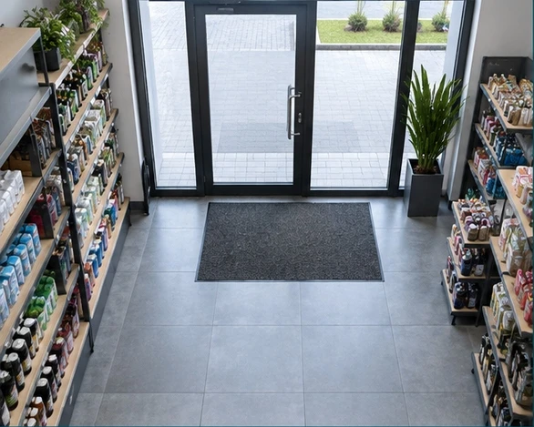
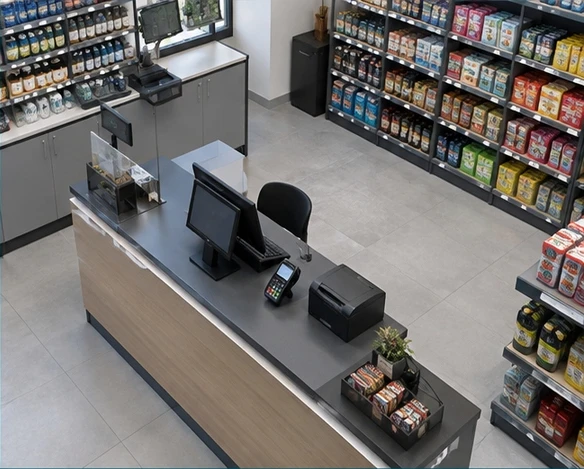
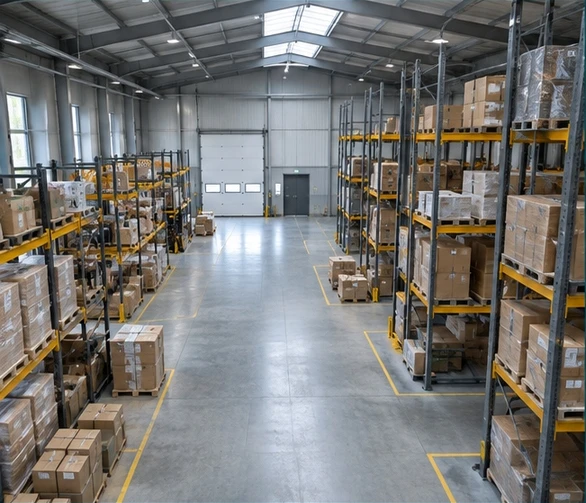
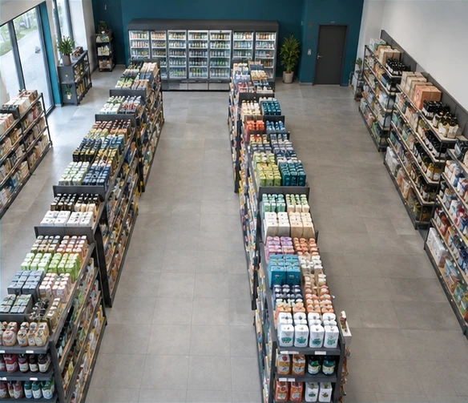

IT-Partner für Handel und Dienstleistung
Sicherheit, die bleibt. IT, die funktioniert.
BeeSecure IT plant, installiert und betreut Videoüberwachung, Kassensysteme und IT-Umgebungen für Einzelhandel, Gastronomie und Filialbetriebe.
BEESECURE / CAMERA OVERVIEWDEMO



Leistungen
Drei Bereiche. Ein verlässlicher Partner.
Wir verbinden Sicherheitstechnik, Kassenprozesse und IT-Betrieb zu einer nachvollziehbaren Gesamtlösung.
Videoüberwachung
Kameraplanung, Aufzeichnung und sicherer Zugriff – abgestimmt auf Ihren Standort.
Videoüberwachung entdeckenKassensysteme
Kasse, Zubehör und Datenexporte: technisch eingerichtet und mit Ihrer Steuerberatung abgestimmt.
Kassensysteme entdeckenIT-Support
Zuverlässige Netzwerke und Arbeitsplätze – mit persönlicher Unterstützung im Alltag.
IT-Support entdeckenZusammenarbeit
Von der Analyse bis zum laufenden Betrieb.
Wir beginnen mit einer Bedarfsanalyse, stimmen Konzept und Angebot ab, setzen die Lösung fachgerecht um und begleiten Sie anschließend im Betrieb.
- AnalyseRäume, Netzwerk, Kassenprozesse und Support-Bedarf prüfen.
- KonzeptLösung, Aufwand, Verantwortlichkeiten und Optionen verbindlich abstimmen.
- UmsetzungInstallieren, konfigurieren, testen, dokumentieren und schulen.
- BetriebSupport, Wartung und Weiterentwicklung nach Vereinbarung.
LEISTUNGEN
Videoüberwachung
Kameraplanung, Aufzeichnung und sicherer Zugriff – abgestimmt auf Ihren Standort.
- Standortanalyse und Kamerapositionen
- Einrichtung von Rekorder und Zugriffsrechten
- Dokumentation, Einweisung und Wartung
LEISTUNGEN
Kassensysteme
Kasse, Zubehör und Datenexporte: technisch eingerichtet und mit Ihrer Steuerberatung abgestimmt.
- Einrichtung kompatibler Kassenhardware und Software
- Unterstützung bei TSE-Anbindung und DSFinV-K-Exporten je nach System
- Dokumentierte Übergabe; keine Steuer- oder Rechtsberatung
LEISTUNGEN
IT-Support
Zuverlässige Netzwerke und Arbeitsplätze – mit persönlicher Unterstützung im Alltag.
- Netzwerk, WLAN und Arbeitsplätze
- Microsoft 365, Datensicherung und Zugriffsverwaltung
- Remote- und Vor-Ort-Support nach Vereinbarung
Kontakt
Erzählen Sie uns von Ihrem Vorhaben.
Kontaktmöglichkeiten werden in Kürze ergänzt. Das Kontaktformular ist derzeit deaktiviert.